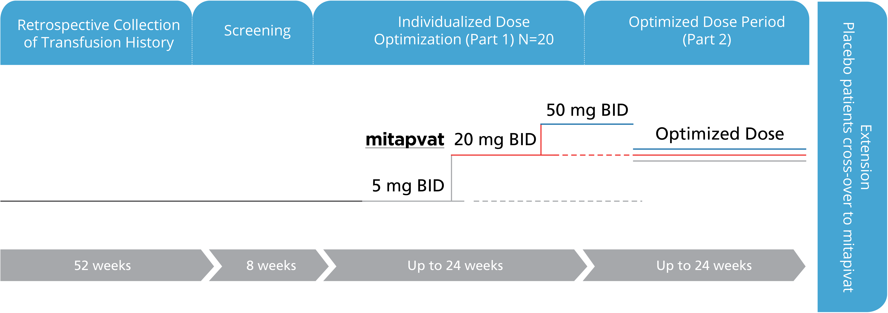

Mitapivat Pipeline Overview  Status: Completed
Status: Completed
ACTIVATE-T: A phase 3 trial studying the investigational drug, mitapivat, in patients with PK deficiency who receive regular drug transfusions1

Primary Efficacy Endpoint:
Reduction in transfusion burden during the Optimized Dose Period over a 6 month period compared to the patient’s transfusion history.
Patient Population
- Regularly transfused adults
- Excludes patients with two non-missense mutations and those homozygous for R479H
Size
- Up to 40 patients
Dose
- Dose titration up to optimal transfusion reduction response (5, 20 or 50 mg twice daily)
Endpoints
- Reduction in transfusion burden
- Safety
- Patient-reported outcomes (PRO)
Control
- Open-label
- Reduction of transfusion burden